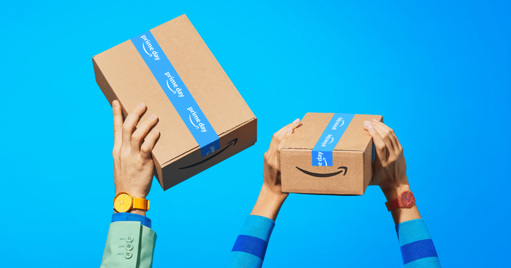
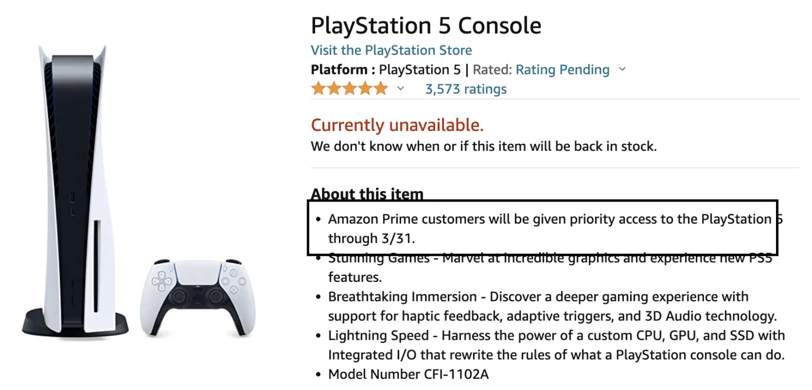
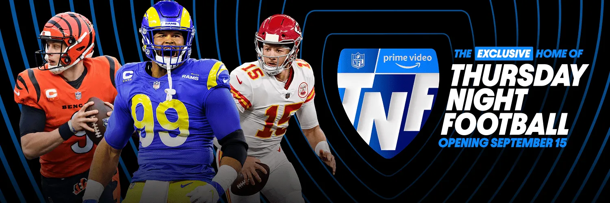
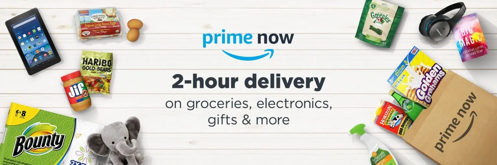

How an Amazon Prime Subscription Can Pay for Itself
By now, you’re likely pretty familiar with Amazon Prime, the e-commerce company’s yearly subscription service. With it, you’ll get free, two-day shipping (and occasionally one- or same-day shipping), ultrafast grocery delivery, access to discounted deals during Prime Day and more.
An Amazon Prime membership costs $139, or $14.99 per month — a slight increase from $119, or $12.99 per month, the price prior to March 25, 2022. But even with this price increase, the economics behind an Amazon Prime membership can still make a lot of sense if you use all of the benefits. In fact, we have a hunch that you might already be using services that you can combine under an Amazon prime membership.
Today, we’re going to help you figure out if getting an Amazon Prime membership is the right choice for your lifestyle
Why You Need Amazon Prime to Save Money
1. Free Delivery
This may be the most well-known reason to pay for an Amazon Prime subscription, and though it’s fairly obvious, it’s a major benefit. Amazon’s free, fast delivery — often in two days or less — on millions of products means that you can get all of your needs (and wants) delivered straight to your door when you need them most.
2. Get Access to Hard-To-Find Products First
On the flip side, this is a benefit you may not have known about: You can get access to hard-to-find products before they go on sale to the general public. In the past, this perk has even included PlayStation 5 consoles.
In short, if you want priority access, you’ll definitely want a Prime membership.
3. Prime Video (Movies, Shows, NFL Games and More)
Amazon Prime Video has a pretty impressive selection of movies and TV shows. This includes hits like “The Marvelous Mrs. Maisel,” and other popular entertainment like Suits and Spider-Man. Amazon is also branching into live TV and will feature “Only on Prime” NFL games next year.
Better yet, if you’re an avid gamer, you’ll also get a complimentary Twitch.TV account with your Prime subscription.
4. Two-Hour, Free Grocery Delivery
There’s no doubt that ordering groceries from the convenience of your home is a pretty sweet perk. It can help save you precious time and energy — especially because many groceries can be delivered within two-hours. You can order from both Amazon Fresh, the flagship grocery delivery, or at participating Whole Foods Market stores.
You can should also consider Amazon Subscribe and Save, which is another way to save five to 15% on groceries you buy all the time.
Who Should Not Get Amazon Prime?
As useful and efficient as Amazon Prime is, there are still some people it may not be the best fit for. If you fall into any of these categories, you might want to reconsider.
If Someone In Your Family Already Has Prime
We’re going to let you in on a little secret: Amazon Household is a game-changer and can cut the cost of your Prime membership in half. It’s the perfect way for up to two adults and four teenagers to share an Amazon Prime membership — all at no additional cost. With it, you can set permissions to see or not see other family member’s purchases, too.
You Only Order from Amazon a Few Times Per Year
If you’re only ordering a handful of products from Amazon every year, you might not get your money’s worth. In addition, if you already have your bases covered elsewhere in terms of groceries, music, photo storage and more, the cost of a membership may not be worth it to you.
5 Subscriptions You Can Ditch and Save Money by Getting Amazon Prime
If you’re paying for multiple of these services, chance are, you could save a bunch of money by combining into them into the singular Amazon Prime price.
Instacart
With Prime Now, you can say goodbye to other grocery delivery services. Prime members in select regions get free grocery delivery and pickup on Amazon Fresh orders, as long as you meet the local free delivery or pickup threshold. Better yet, you’ll also receive additional benefits at Whole Foods Market and on Amazon Fresh purchases.
Netflix, Hulu and Other Entertainment Streaming Services
The streaming wars are on, Prime Video is poised to be a top contender. And let’s be real — you’ve already seen everything on Netflix anyway.
Dropbox
Amazon Photos might be the most underrated benefit, but a valuable one at that. With it, you’ll get unlimited photo storage and can kiss your Dropbox or Apple storage subscription goodbye.
Apple Music, Spotify and Other Music Streaming Services
With Amazon Music, you can stream over two million songs and easily go back-and-forth between your phone and your Amazon Alexa.
Nook
If you’re already using Amazon for reading, you’re ahead of the game. If not, just know that with Prime Reading, you can get unlimited access to thousands of books on any of your devices.
Amazon Prime Price, Membership & More FAQs
How much is Amazon Prime?
After a 30-day free trial, Amazon Prime is a reasonable $14.99/month or $139/year. If you purchase it for the year, you save roughly $40.
What if my wife/husband already has Prime? Do I need to get a new Prime account?
Part of saving money is knowing when you shouldn’t spend it in the first place. If a family member or partner of yours is already paying the Amazon Prime price, there’s no need to double down. Instead, talk to them about adding you to their Amazon Household account. You get all of the benefits and they don’t pay any extra.
Explore Amazon Prime + 30-Day Free Trial